두가지 업데이트가 있어여!
첫번째로는
기본적으로 저장된 위치로 이동하는
1회용 워프 플레이트!!
1회용이기
때문에 한번 설치하고 사용하면 사라져여!
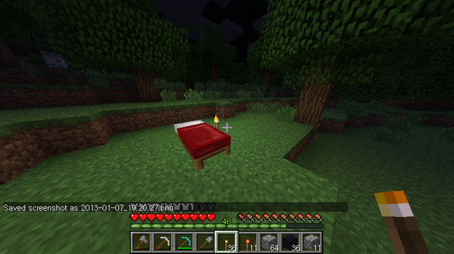
우선 침대를 설치해서 위치를 저장할게여
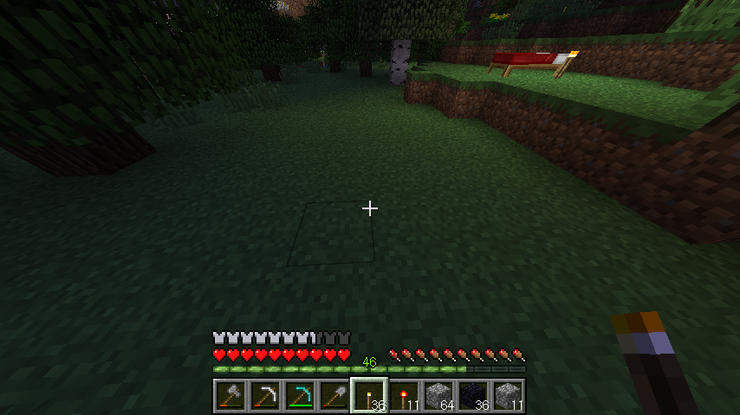
그리고 침대 좀 떨어져서
5x5x1 만큼의 자리를
마련하구(이번엔 1층만 만들면 되여!)

조약돌(Cobble Stone)만으로
위의 모양을 만들어주세여!
지금보니 네잎클로버 모양이엇네요 ㅎㅎ
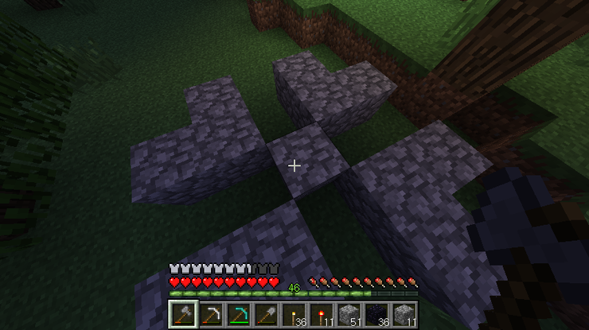
그리고 이제 가운데 돌을 우클릭해주면!

메시지와 함께 침대로 텔레포트됨니다!
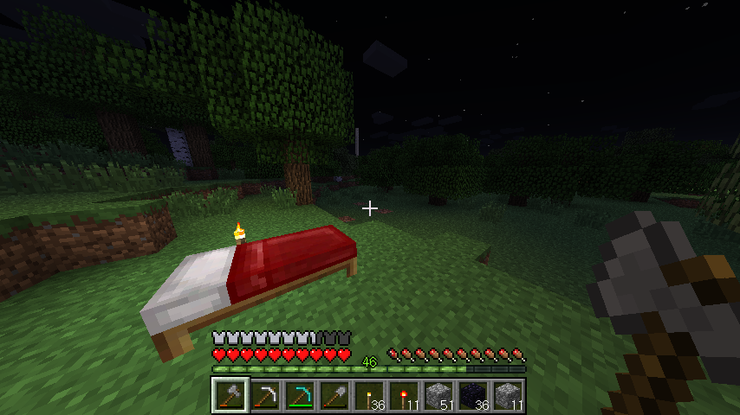
아까 설치했던 1회용 워프 플레이트가
사라진 것을 확인하실 수 잇어영
이제 두번째로 추가된 명령어를 살펴볼게여!
클라이언트용의 워프플레이트 정보를 볼 수
있는
/WarpPlate [번호]
서버용의 워프 대기시간을 조절하는
WarpPlate delay [시간]
을 추가해보았슴니다!
우선 클라이언트용 명령어를 볼까여?
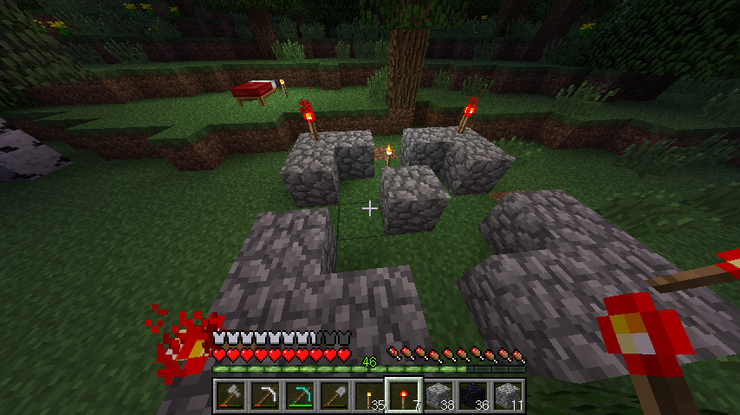
우선 워프플레이트를 하나 만들어볼게여
패턴은 좀 복잡하게
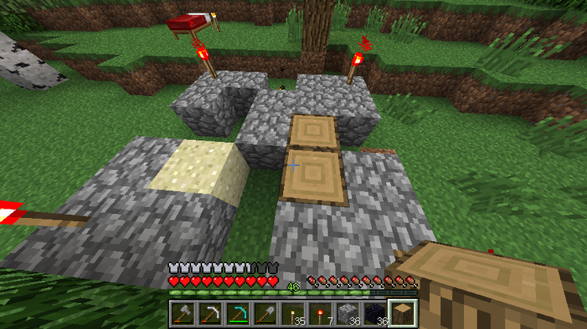
2, 3번에 조약돌
5번에 나무
6번에 모래
8번에 다시
나무
이렇게 만들게여!
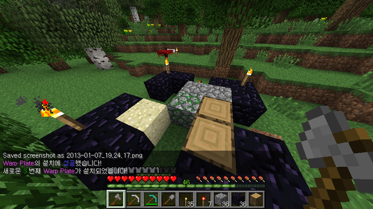
우클릭하면 메시지와 함께 만들어집니다!!
지금 만들어진 워프 플레이트는 세번째거라네여
그럼 이제 명령어를 사용해볼까여?
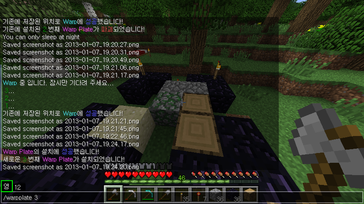
세번째였으니까
채팅창에 /WarpPlate 3 라고
입력해볼게여
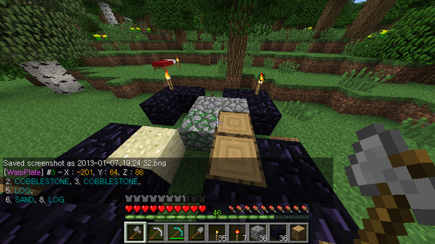
그러자 짠~!
방금 만든 패턴의 정보를 알려줍니다~!!
더불어 좌표정보도 알려줘여
그리고 잠시 잘 작동하는지
워프 한번 해볼게여!
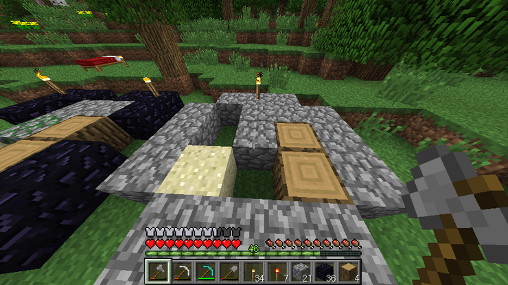
같은 패턴으로 만들어주고...
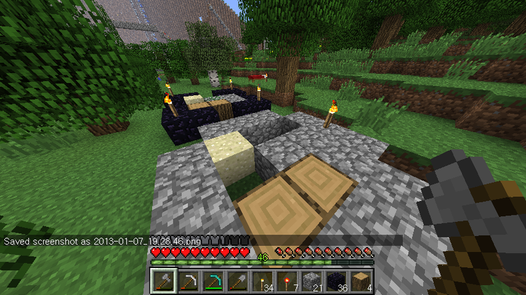
우클릭하면!
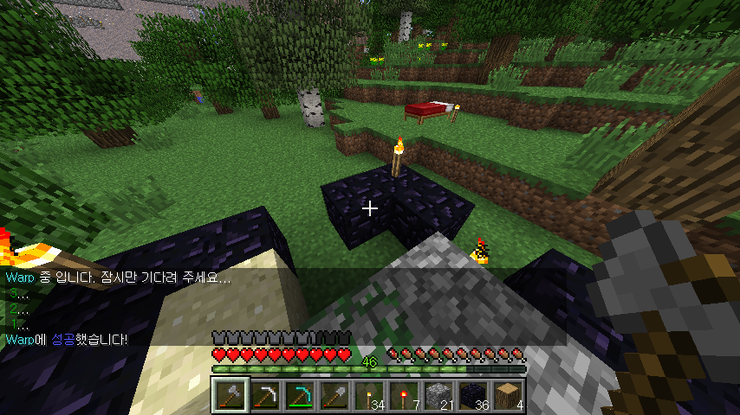
메시지와 함께 이동!!
하는데 3.. 2.. 1.. 이라고 뜨네여!
실제로 사용해보시면 이동 후에 바로 움직일 수 없고
성공했다고 했을때부터 움직일
수 있어여!
제가 운영하는 서버 컴퓨터에
메모리(램)이 512MB라서 너무 부족하더라구여!!
그래서 워프를 사용할때 맵 로딩이 덜되서
밑으로 떨어지면서 블럭에 낑겨서 데미지를 입고
심지어는 죽기까지!!!
안되겠다 싶어서
임시적으로 조치를 취햇습니다!
계속해서 같은 위치로 몇초동안 반복해서 텔레포트 시켜주는거에여!
아무튼 잡설은 여기까지 하구..
서버 콘솔창에서의 명령어도 있어여!!
대기시간이 3이었는데 한번
10으로 늘려볼게여
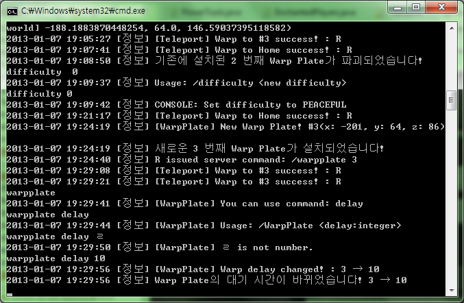
위와 같이 WarpPlate delay 10 이라고
입력하면
메시지와함께 바뀌었다고 표시되면서
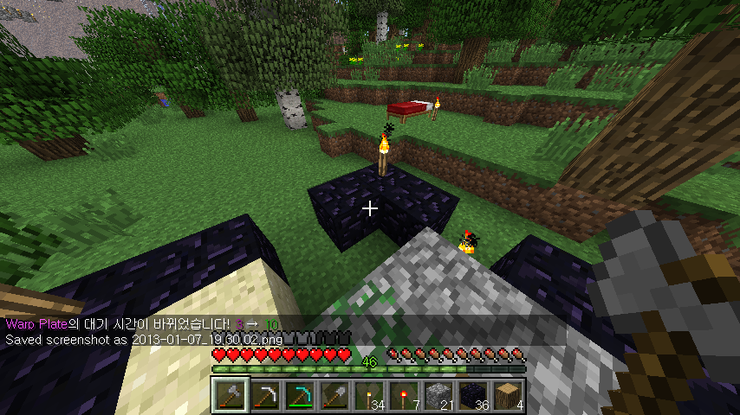
서버 전체에도 시간이 바뀌었다고 알려준답니다
다시 워프를 해보면
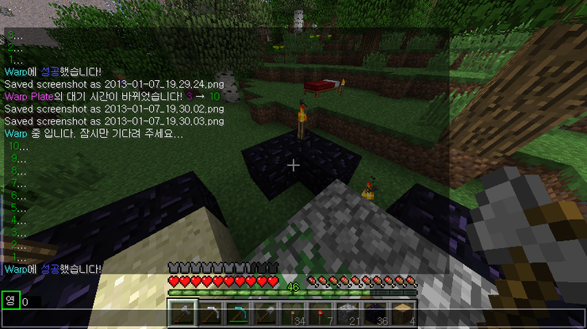
10을 다 셀때까지
움직일 수 업게되져!!
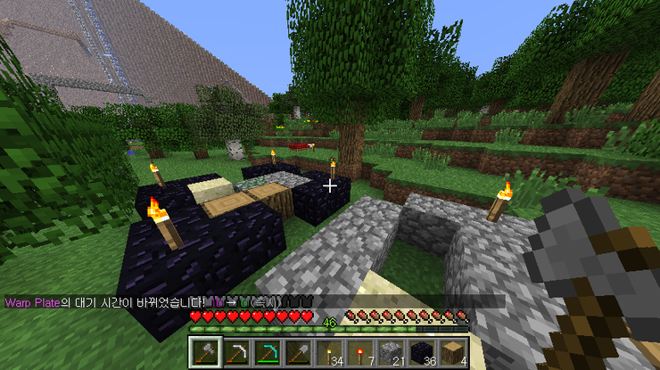
WarpPlate delay 0 이라고 입력하면
위와 같이 즉시 이동시킬 수 있으니
(잘 안보이지만)
맵 로딩이 충분히 빠른 서버라면
0으로 설정하고
사용해주세여!!

아참!
그냥 채팅창에 /WarpPlate 라고 입력하면
도움말 정보가 나오구여!
없는 워프 플레이트 번호를 입력하면 없다고 나와여!
추가적으로
1.1버전에서
업데이트했던
강제복구 기능에 대해 알려드릴게여
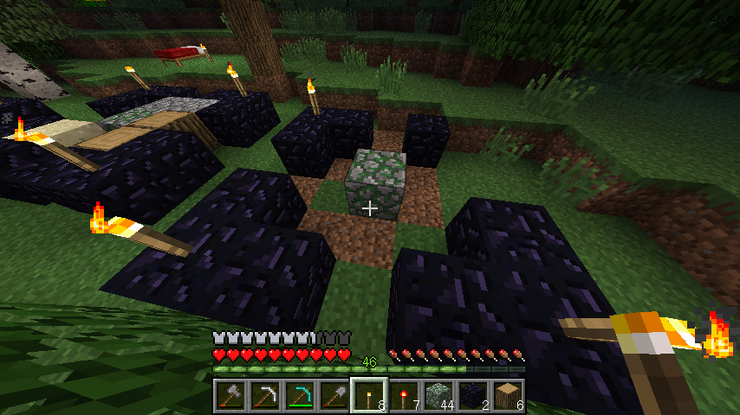
가끔 오류가 발생해서
등록되지 않았는데
저렇게 워프 플레이트 모양으로 남아있는
경우가 있어여..
제대로 수정해야되는데 아직 원인을 모르겠더라구여 ㅠㅠ
아무튼 이런 상태에서 우클릭을 해주면!
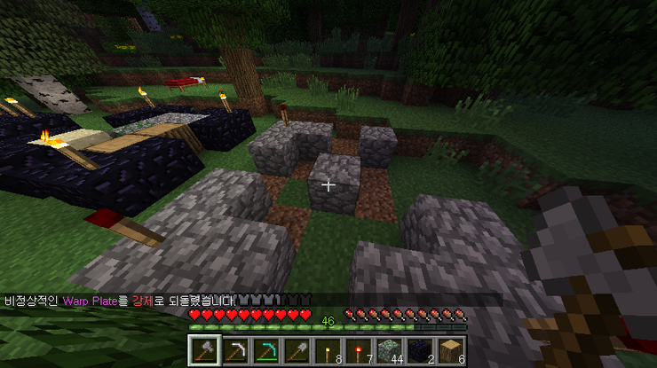
돌로 바꿔줍니다!!
사실 그냥 다이아 곡괭이로 캐셔도 되여
근데 귀찮을때는.. ㅎㅎ
그런데 이게 모양만 맞으면 바꿔주는거라서여
밑의 사진처럼
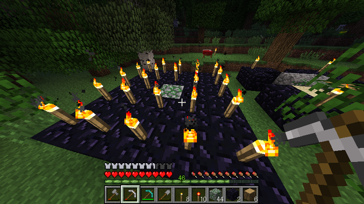
그냥 (극단적으로) 이렇게
놓고 해도
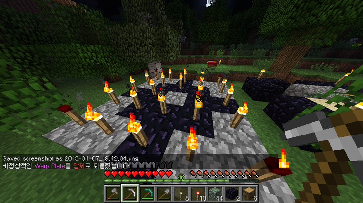
워프 플레이트 모양만큼 원래대로 바꿔줘여..
혹시 모르니 조심하세여!!
1.2 업데이트는
여기까지임니다!!
다시한번 당부드리지만
버그가 수도없이 많을 수 있으니
혹시 이상한 점이 발견되면
어떤 버그가 어떤 상황에서 생겼는지
가능하면 꼭 댓글로 알려주세여!!
부탁드림니다 ㅎㅎ
※ 추가 사항 v1.2
1. 서버 : WarpPlate delay 명령어 추가
2. 클라이언트 : /WarpPlate 명령어 추가
3. 1회용 Warp Plate 추가
※ 수정 사항 v1.2
1. 강제복구
기능을 완전히 일치에서 절반 이상 일치로 변경
차후 제작 예정 목록
1. Power Tools
파워한 도구가 사용 가능!
- 도끼 : 나무 밑둥부터 맨 위까지 한꺼번에 채집
- 곡괭이 : 채집한 블럭 주변의 같은 블럭들도 함께 채집
- 삽 : 넓은 범위의 바닥을 한번에 채집
- 버프 시스템으로
남아있는 파워 수치를 소비하여 사용
- 도구의 재질에
따라 효과 범위 조절
2. Exiting Rail Road
씐나는 기차 레일 깔기!
- 일직선으로
레일 한번에 여러개 설치
- 명령어 또는
제물 재료에 따라 한번에 설치하는 길이 조절
3. Dowsing Rod
주변에 찾는 광물이 있으면 소리로 알려주는 다우징!
4. Auto Fix
자동수리 플러그인!
특정 재료를 가지고 있으면 내구도가 다 닳을 때 자동 수리
- 부싯돌 + @ 가 있으면 자동으로 소비
5. Drill Machine
굴삭기 모양을 만들고 클릭하면 자동으로 땅을 파주는 드릴머신!
- 돌(조약돌 제외), 모래, 자갈, 흙의 경우만 파냄
- 광물 종류는
그대로 둠
6. Digital Clock
몇일 전에 게시판에서 본 플러그인...
- (년-)(월-일) (AM/PM) 시:분(:초) 포맷을 블럭로
쌓아서 보여줌